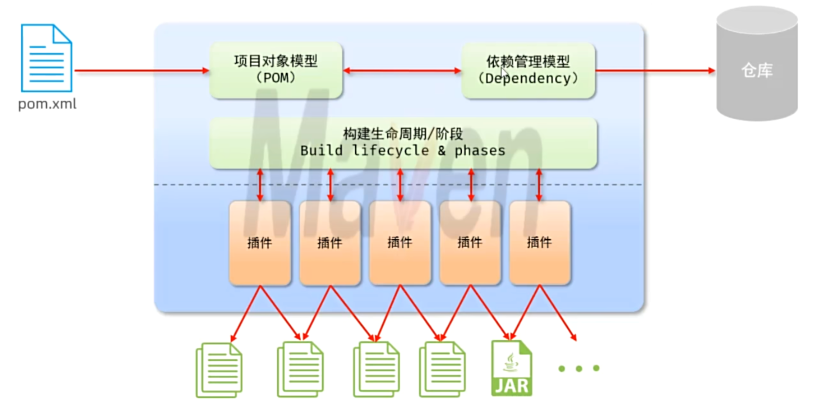

Maven
一、Maven
1.1 Maven 概述
1.1.1 什么是 Maven
Maven 是一款用于管理和构建 Java 项目的工具，是 apache 旗下的一个开源项目。
1.1.2 Maven 的作用：
- 依赖管理：方便快捷的管理项目依赖的资源（JAR 包）
- 项目构建：标准化、跨平台（Linux、Windows、MacOS）的自动化项目构建方式
- 统一项目结构：提供标准、统一的项目结构
- 项目管理：统一管理项目信息、版本、文档等

1.2 项目对象模型（POM）
POM（Project Object Model，项目对象模型） 是 Maven 项目的核心，以 XML 文件 pom.xml 的形式存在。
POM 的作用：POM 将一个 Maven 项目抽象为一个对象模型，描述项目的基本信息、依赖、构建配置、插件、仓库等
POM 的关键元素：
groupId：组织/公司标识artifactId：项目/模块名version：版本packaging：打包方式，如 jar、war、pomdependencies：依赖build：构建配置modules：子模块
1.3 坐标
Maven 通过 坐标（Coordinate） 唯一定位一个项目或构件（artifact）。
GAV 是 Maven 中用来唯一标识一个构件（artifact）的三个核心坐标
groupId：表示组织、公司或项目组的标识。通常用反向域名，比如com.alibaba。artifactId：表示项目或模块的名称。比如user-serviceversion：表示构件的版本号。比如1.0.0
<groupId>com.example</groupId>
<artifactId>demo</artifactId>
<version>1.0.0</version>
完整坐标还可包含
packaging（打包类型）和classifier（分类器）
1.4 仓库
Maven 仓库是 Maven 用来存放和获取构件（jar、pom、war 等）的地方。
Maven 项目在构建时，会根据 GAV 坐标去仓库中查找依赖，找不到就下载，找到就直接使用。
仓库的分类：
- 本地仓库：自己计算机上的一个目录。构建时优先从本地仓库找。
- 位置：默认在
~/.m2/repository，Windows 一般是C:\Users\用户名\.m2\repository。 - 通过
mvn install可以把项目安装到本地仓库。 - 可以在
settings.xml中修改位置：<localRepository>D:/maven/repository</localRepository>
- 位置：默认在
- 远程仓库（私服）：一般由公司团队搭建的私有仓库。
- release 仓库：存放正式版本。
- snapshot 仓库：存放快照版本。
- 中央仓库：由 Maven 团队维护的全球唯一的。
仓库的查找顺序：本地仓库 -> 远程仓库（私服） -> 中央仓库
1.5 依赖管理
1.5.1 依赖管理概述
依赖管理指 Maven 自动处理项目所依赖的第三方库（JAR 包）：从仓库自动下载、解析传递性依赖、解决版本冲突、管理依赖范围等。
开发者只需在 pom.xml 中声明“需要什么”，Maven 自动完成“如何获取和使用”。
为什么需要依赖管理：解决手动导入 JAR 包的痛点
1.5.2 依赖的声明
步骤：
- 编写
pom.xml中的<dependencies> - 使用
<dependency>引入依赖 - 定义依赖的 GAV 坐标（
groupId、artifactId、version） - 点击刷新，引入最新依赖
<dependencies>
<dependency>
<groupId>org.springframework</groupId> <!-- 组织 -->
<artifactId>spring-core</artifactId> <!-- 模块 -->
<version>6.0.0</version> <!-- 版本 -->
<scope>compile</scope> <!-- 依赖范围（可选，默认 compile） -->
<optional>false</optional> <!-- 是否可选 -->
<exclusions> <!-- 排除传递依赖，可选 -->
<exclusion>
<groupId>commons-logging</groupId>
<artifactId>commons-logging</artifactId>
</exclusion>
</exclusions>
</dependency>
</dependencies>
1.5.3 依赖范围（Scope）
依赖范围（Scope）用于控制依赖在哪些构建阶段可用、是否参与编译/测试/运行、是否被打包，是 Maven 依赖管理的重要机制。
依赖的 JAR 包，默认情况下，可以在任何地方使用。可以通过 <scope>...</scope> 设置其作用范围
六种范围对编译、测试、运行、打包的影响：
| Scope | 编译（主程序） | 测试 | 运行 | 打包 | 说明 | 典型用途 |
|---|---|---|---|---|---|---|
compile |
✅ | ✅ | ✅ | ✅ | 默认范围，全程可用 | Spring、Apache Commons 等核心依赖 |
test |
❌ | ✅ | ❌ | ❌ | 仅测试阶段可用，不打包 | JUnit、Mockito、Spring Test |
provided |
✅ | ✅ | ❌ | ❌ | 编译测试可用，运行由容器提供 | Servlet API、JSP API、Lombok |
runtime |
❌ | ✅ | ✅ | ✅ | 编译不可用，测试运行可用 | MySQL JDBC 驱动、SLF4J 实现 |
system |
✅ | ✅ | ✅ | ❌ | 本地系统路径依赖，不推荐 | 本地已有 JAR（应避免使用） |
import |
— | — | — | — | 仅用于 <dependencyManagement> |
Spring Boot BOM、Spring Cloud BOM |
1.5.4 排除依赖
排除依赖指主动断开依赖的资源，被排除的资源无需指定版本
使用 <exclusions>、<exclusion> 标签排除依赖
1.6 生命周期
1.6.1 生命周期概述
Maven 生命周期是 Maven 构建流程的“骨架”，它定义了一个项目从清理到部署会经历哪些阶段，以及执行某个命令时实际会按什么顺序执行哪些步骤。
Maven 有三套相互独立的生命周期：
clean：清理项目。mvn cleandefault：构建项目。mvn compile、mvn package、mvn installsite：生成项目站点文档。mvn site
注意事项：
- 在同一套生命周期中，当运行后面的阶段时，前面的阶段都会运行。
- 如果想在执行
package时自动执行clean，可以使用mvn clean package。
1.6.2 clean 生命周期
clean 生命周期用于清理构建产物。
阶段顺序：
pre-clean：清理前准备clean：删除 target 目录post-clean：清理后收尾
常用命令：
mvn clean
1.6.3 default 生命周期
这是最核心的生命周期，负责编译、测试、打包、安装、部署。
default 生命周期包含以下阶段：
| 阶段（phase） | 作用 | 常见绑定插件/目标 |
|---|---|---|
validate |
校验项目是否正确，必要信息是否齐全 | — |
initialize |
初始化构建状态，例如设置属性 | — |
generate-sources |
生成主源代码 | maven-antrun-plugin 等 |
process-sources |
处理主源代码，例如过滤值 | maven-resources-plugin |
generate-resources |
生成主资源文件 | maven-resources-plugin |
process-resources |
处理主资源文件，复制到输出目录 | maven-resources-plugin:resources |
compile |
编译主源代码 | maven-compiler-plugin:compile |
process-classes |
处理编译后的 class 文件，如字节码增强 | maven-antrun-plugin 等 |
generate-test-sources |
生成测试源代码 | maven-antrun-plugin 等 |
process-test-sources |
处理测试源代码 | maven-resources-plugin |
generate-test-resources |
生成测试资源文件 | maven-resources-plugin |
process-test-resources |
处理测试资源文件，复制到测试输出目录 | maven-resources-plugin:testResources |
test-compile |
编译测试源代码 | maven-compiler-plugin:testCompile |
process-test-classes |
处理编译后的测试 class 文件 | maven-antrun-plugin 等 |
test |
运行单元测试 | maven-surefire-plugin:test |
prepare-package |
打包前准备 | — |
package |
打包，生成 jar、war 等 | maven-jar-plugin:jar、maven-war-plugin:war |
pre-integration-test |
集成测试前准备，如启动容器 | maven-failsafe-plugin 等 |
integration-test |
运行集成测试 | maven-failsafe-plugin:integration-test |
post-integration-test |
集成测试后处理，如停止容器 | maven-failsafe-plugin 等 |
verify |
校验包是否有效、是否满足质量标准 | maven-failsafe-plugin:verify |
install |
安装到本地仓库 | maven-install-plugin:install |
deploy |
部署到远程仓库 | maven-deploy-plugin:deploy |
其中，核心阶段:
| 阶段 | 作用 |
|---|---|
validate |
校验项目 |
compile |
编译主代码 |
test |
运行单元测试 |
package |
打包 |
verify |
校验包 |
install |
安装到本地仓库 |
deploy |
部署到远程仓库 |
执行某个阶段时，会按顺序先执行它之前的所有阶段。例如 mvn package 会依次执行 validate → compile → test → package
1.7 Maven 项目目录结构
项目根目录/
├── pom.xml # Maven 核心配置文件
├── src/ # 源码目录
│ ├── main/ # 主程序目录（生产代码）
│ │ ├── java/ # 主 Java 源代码
│ │ │ └── com/example/ # 包结构
│ │ │ └── App.java
│ │ ├── resources/ # 主资源文件（配置文件等）
│ │ │ ├── application.properties
│ │ │ └── logback.xml
│ │ └── webapp/ # Web 项目专用（WAR 包）
│ │ ├── WEB-INF/
│ │ │ └── web.xml
│ │ └── index.jsp
│ └── test/ # 测试代码目录
│ ├── java/ # 测试 Java 源代码
│ │ └── com/example/
│ │ └── AppTest.java
│ └── resources/ # 测试资源文件
│ └── test.properties
└── target/ # 构建输出目录（自动生成）
├── classes/ # 编译后的主代码
├── test-classes/ # 编译后的测试代码
├── generated-sources/ # 生成的源码
├── maven-status/ # Maven 状态信息
└── 项目名-版本号.jar # 打包产物
二、单元测试
2.1 测试
测试是一种用来促进鉴定软件的正确性、完整性、安全性和质量的过程。
测试阶段划分：
- 单元测试：对软件的基本组成单位进行测试，最小测试单位。
- 集成测试：将已分别通过测试的单元，按设计要求组合成系统或子系统，再进行的测试。
- 系统测试：对已经集成好的软件系统进行彻底的测试。
- 验收测试：交付测试，是针对用户需求、业务流程进行的正式的测试。
测试方法：
- 白盒测试
- 黑盒测试
- 灰盒测试
2.2 JUnit 单元测试
单元测试是针对最小的功能单元（方法），编写测试代码对其正确性进行测试。
JUnit是 Java 生态中最主流的单元测试框架，目前主流版本是 JUnit 5（JUnit 4 仍广泛存在于老项目中）。
2.2.1 环境搭建
在 Maven 项目的 pom.xml 中,引入 JUnit 的依赖：
<!--junit依赖-->
<dependency>
<groupId>org.junit.jupiter</groupId>
<artifactId>junit-jupiter</artifactId>
<version>5.9.1</version>
<!--依赖范围-->
<scope>test</scope>
</dependency>
2.2.2 第一个测试用例
在 test/java 目录下，创建测试类，并编写对应的测试方法
注意事项：
- 测试类命名规范：
XxxTest - 方法命名规定：
public void testXxx(){...} - 方法上声明
@Test注解 - 断言方法：
assertEquals、assertTrue、assertThrows等
class CalculatorTest {
@Test
void testAdd() {
assertEquals(5, new Calculator().add(2, 3));
}
}
2.3 JUnit 断言
单元测试方法运行不报错，不代表业务方法没问题
通过断言可以检测方法运行结果是否和预期一致，从而判断业务方法的正确性
语法：Assertions.assertXxxx(...)
2.3.1 基本断言
| 方法 | 说明 | 示例 |
|---|---|---|
assertEquals(expected, actual) |
判断两个值相等 | assertEquals(5, calc.add(2, 3)) |
assertNotEquals(unexpected, actual) |
判断两个值不相等 | assertNotEquals(0, calc.add(2, 3)) |
assertTrue(condition) |
判断条件为 true | assertTrue(list.isEmpty()) |
assertFalse(condition) |
判断条件为 false | assertFalse(list.contains("a")) |
assertNull(actual) |
判断对象为 null | assertNull(map.get("missing")) |
assertNotNull(actual) |
判断对象不为 null | assertNotNull(map.get("key")) |
2.3.2 数组与集合断言
| 方法 | 说明 | 示例 |
|---|---|---|
assertArrayEquals(expected, actual) |
判断两个数组内容相等 | assertArrayEquals(new int[]{1,2}, arr) |
assertIterableEquals(expected, actual) |
判断两个可迭代对象元素顺序与内容相等 | assertIterableEquals(List.of(1,2), list) |
assertLinesMatch(expected, actual) |
按行匹配（支持正则） | assertLinesMatch(List.of("a.*"), lines) |
2.3.3 异常断言
| 方法 | 说明 | 示例 |
|---|---|---|
assertThrows(Class, Executable) |
断言抛出指定异常，并返回异常对象 | assertThrows(ArithmeticException.class, () -> calc.div(1, 0)) |
assertDoesNotThrow(Executable) |
断言不抛出任何异常 | assertDoesNotThrow(() -> calc.add(1, 2)) |
2.3.4 超时断言
| 方法 | 说明 | 示例 |
|---|---|---|
assertTimeout(Duration, Executable) |
断言在指定时间内执行完（不中断执行） | assertTimeout(Duration.ofSeconds(1), () -> task.run()) |
assertTimeoutPreemptively(Duration, Executable) |
断言在指定时间内执行完（超时立即中断） | assertTimeoutPreemptively(Duration.ofMillis(500), () -> task.run()) |
2.3.5 组合断言
| 方法 | 说明 | 示例 |
|---|---|---|
assertAll(Executable...) |
执行所有断言，收集全部失败信息 | assertAll(() -> assertEquals(1,a), () -> assertEquals(2,b)) |
assertAll(String heading, Executable...) |
带标题的组合断言 | assertAll("user", () -> ..., () -> ...) |
2.3.6 其他常用断言
| 方法 | 说明 | 示例 |
|---|---|---|
fail(message) |
直接让测试失败 | fail("不应执行到这里") |
assertInstanceOf(Class, object) |
判断对象类型 | assertInstanceOf(String.class, obj) |
assertSame(expected, actual) |
判断引用相同 | assertSame(obj, obj2) |
assertNotSame(unexpected, actual) |
判断引用不同 | assertNotSame(new Object(), new Object()) |
2.4 JUnit 注解
2.4.1 测试方法相关注解
| 注解 | 作用 | 示例 |
|---|---|---|
@Test |
标记一个方法为测试方法 | @Test void testAdd() {} |
@DisplayName |
自定义测试类/方法的显示名称 | @DisplayName("加法测试") |
@Disabled |
禁用测试类或测试方法 | @Disabled("暂不执行") |
@Timeout |
设置测试超时时间 | @Timeout(value = 1, unit = TimeUnit.SECONDS) |
@Tag |
给测试打标签，用于分组过滤 | @Tag("fast") |
@RepeatedTest |
重复执行测试指定次数 | @RepeatedTest(3) |
@ParameterizedTest |
参数化测试 | @ParameterizedTest |
@TestFactory |
动态测试工厂方法 | @TestFactory Stream<DynamicTest> tests() |
@TestTemplate |
测试模板，需配合扩展使用 | @TestTemplate |
2.4.2 生命周期注解
| 注解 | 作用 | 执行时机 | 注意 |
|---|---|---|---|
@BeforeEach |
每个测试方法前执行 | 每个 @Test 之前 |
可访问实例成员 |
@AfterEach |
每个测试方法后执行 | 每个 @Test 之后 |
可访问实例成员 |
@BeforeAll |
所有测试方法前执行一次 | 整个测试类开始前 | 默认必须是 static 方法 |
@AfterAll |
所有测试方法后执行一次 | 整个测试类结束后 | 默认必须是 static 方法 |
2.4.3 参数化测试数据源注解
| 注解 | 作用 | 示例 |
|---|---|---|
@ValueSource |
提供单一类型的基本数据源 | @ValueSource(ints = {1,2,3}) |
@CsvSource |
提供 CSV 格式数据 | @CsvSource({"1,1,2", "2,3,5"}) |
@CsvFileSource |
从 CSV 文件读取数据 | @CsvFileSource(resources = "/data.csv") |
@MethodSource |
引用返回 Stream 的方法 | @MethodSource("dataProvider") |
@EnumSource |
提供枚举数据源 | @EnumSource(Color.class) |
@NullSource |
提供 null 数据 | @NullSource |
@EmptySource |
提供空值（空字符串/集合等） | @EmptySource |
@NullAndEmptySource |
同时提供 null 和空值 | @NullAndEmptySource |
@ArgumentsSource |
自定义参数提供者 | @ArgumentsSource(MyProvider.class) |
2.4.4 嵌套与顺序注解
| 注解 | 作用 | 示例 |
|---|---|---|
@Nested |
标记非静态内部类为嵌套测试 | @Nested class WhenEmpty {} |
@TestMethodOrder |
指定测试方法执行顺序策略 | @TestMethodOrder(MethodOrderer.OrderAnnotation.class) |
@Order |
配合排序策略指定方法顺序 | @Order(1) |
@TestInstance |
控制测试实例生命周期 | @TestInstance(Lifecycle.PER_CLASS) |
2.4.5 扩展与集成注解
| 注解 | 作用 | 示例 |
|---|---|---|
@ExtendWith |
注册扩展（替代 JUnit4 的 @RunWith） | @ExtendWith(MockitoExtension.class) |
@RegisterExtension |
以字段方式注册扩展 | @RegisterExtension MockitoExtension ext = ... |
@TempDir |
注入临时目录 | @TempDir Path tempDir |
@EnabledOnOs / @DisabledOnOs |
按操作系统启用/禁用 | @EnabledOnOs(OS.WINDOWS) |
@EnabledOnJre / @DisabledOnJre |
按 JDK 版本启用/禁用 | @EnabledOnJre(JRE.JAVA_17) |
@EnabledIfSystemProperty |
按系统属性启用 | @EnabledIfSystemProperty(named="env", matches="dev") |
@EnabledIfEnvironmentVariable |
按环境变量启用 | @EnabledIfEnvironmentVariable(named="CI", matches="true") |
@EnabledIf / @DisabledIf |
按自定义条件启用/禁用 | @EnabledIf("customCondition") |
2.4.6 参数注入注解（配合扩展）
| 注解 | 作用 | 示例 |
|---|---|---|
@TestInfo |
注入测试信息对象 | void test(TestInfo info) |
@TestReporter |
注入报告对象 | void test(TestReporter reporter) |
@Mock（Mockito） |
创建 Mock 对象 | @Mock UserDao dao; |
@InjectMocks（Mockito） |
注入 Mock 到被测对象 | @InjectMocks UserService service; |
@MockBean（Spring） |
Spring 容器中替换 Bean | @MockBean UserRepository repo; |
@Autowired（Spring） |
注入 Spring Bean | @Autowired UserService service; |
2.4.7 JUnit 4 与 JUnit 5 注解对照
| JUnit 4 | JUnit 5 | 说明 |
|---|---|---|
@Before |
@BeforeEach |
每个测试前执行 |
@After |
@AfterEach |
每个测试后执行 |
@BeforeClass |
@BeforeAll |
类级别前执行一次 |
@AfterClass |
@AfterAll |
类级别后执行一次 |
@Ignore |
@Disabled |
忽略/禁用测试 |
@RunWith |
@ExtendWith |
指定运行器/扩展 |
@Category |
@Tag |
测试分类 |
@Rule / @ClassRule |
@ExtendWith / @RegisterExtension |
规则/扩展 |
2.5 企业开发规范
原则：编写测试方法时，要尽可能的覆盖业务方法中所有可能的情况(尤其是边界值)。